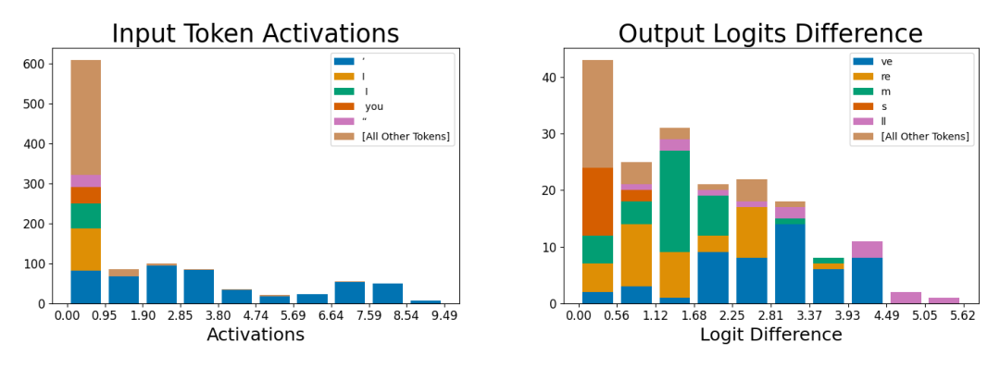

Apostrophe feature for pronoun contractions ("I'll", "you'll")

Reading the two-panel histogram
Each panel pair repeats the input/output histogram layout used for the general apostrophe feature and the 'if' and 'Dis' features: the left plot, 'Input Token Activations,' bins every dataset token that activates this feature by activation strength (x-axis, running to roughly 9.5) and stacks each bin by which token produced it, with the five most common tokens given their own color and everything else lumped into '[All Other Tokens].' The right plot, 'Output Logits Difference,' instead bins by how much a token's predicted logit drops when the feature is ablated from the residual stream, again stacked and colored by token identity. A naive read of the tallest bar in the left panel is misleading: that bar sits at the lowest activation strengths and is mostly the tan '[All Other Tokens]' color, a grab-bag of weakly-activating, unrelated tokens. The feature's real identity only becomes visible in the higher-activation bins further right, which are almost solid blue: the apostrophe token. The right panel should likewise be read as a distribution over several suppressed tokens, not one.
What the histograms show
At higher activation strengths the input histogram is almost entirely the apostrophe token, with 'I,' 'l,' 'you,' and a quotation mark appearing only as minor slivers at low activation. That secondary presence of 'I' and 'you' is the tell: this feature fires on apostrophes specifically in pronoun-contraction contexts such as "I'll" and "you'll," not on apostrophes in general. Ablating the feature suppresses several different next-token predictions rather than one: 've,' 're,' 'm,' 's,' and 'll' all appear as sizeable colored segments across the logit-difference bins. So although the feature's most common trigger context looks like "'ll," its causal downstream effect covers a family of pronoun-contraction endings (I've, you're, I'm, it's, I'll), not just the ending it happens to fire most on.
Why two apostrophe features matter
This feature is one of two contraction-specific apostrophe features documented alongside the general-purpose apostrophe feature 556; its sibling in Figure 15 fires on a different contraction family (sparse-autoencoders, §"5.1 INPUT: DICTIONARY FEATURES ARE HIGHLY MONOSEMANTIC", p. 7; §"D.2 EXAMPLES OF LEARNED FEATURES", p. 16). That the dictionary-learning process splits "apostrophe" into multiple narrower, context-specific Dictionary features -- rather than one broad apostrophe feature -- is direct evidence for Monosemanticity: each feature corresponds to one coherent linguistic pattern with a distinct causal footprint on the model's output, the opposite of the Polysemanticity that motivates the paper's approach to Superposition. See also the general case study, Apostrophe dictionary feature (feature 556).